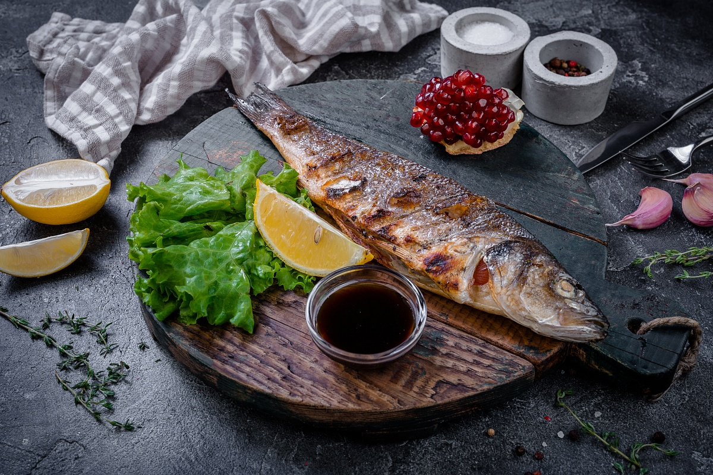
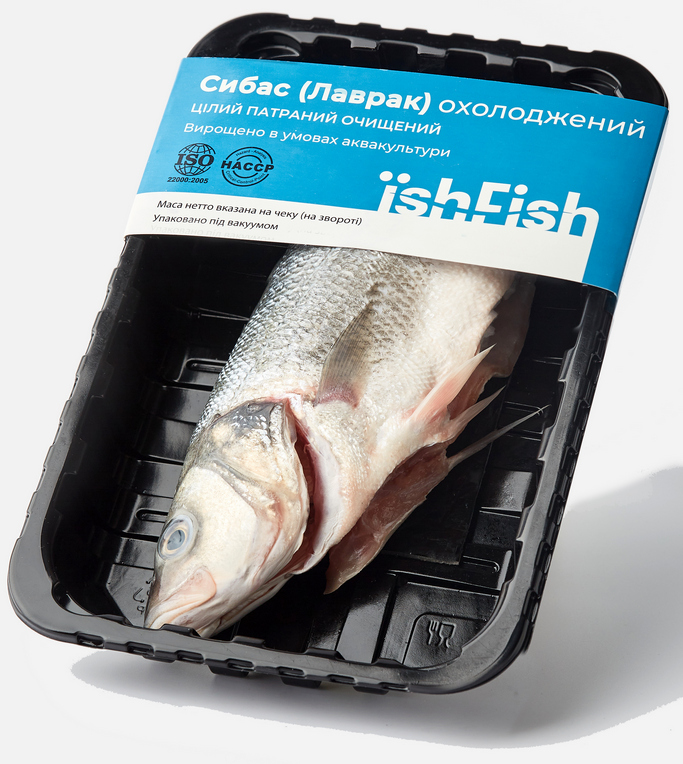

Сібас смажений
Інгредієнти:
риба сібас, патрана, охолоджена,
сіль,
перець чорний, мелений,
борошно,
рослинна олія за смаком
Приготування:
Рибу промити холодною водою, витерти серветкою (за необхідністю розділити на декілька частин). Натерти сіллю та перцем, залишити на дві години. На розігріту сковороду додати рослинної олії. Далі обваляти рибу в борошні та смажити до золотавої скоринки на середньому вогні.